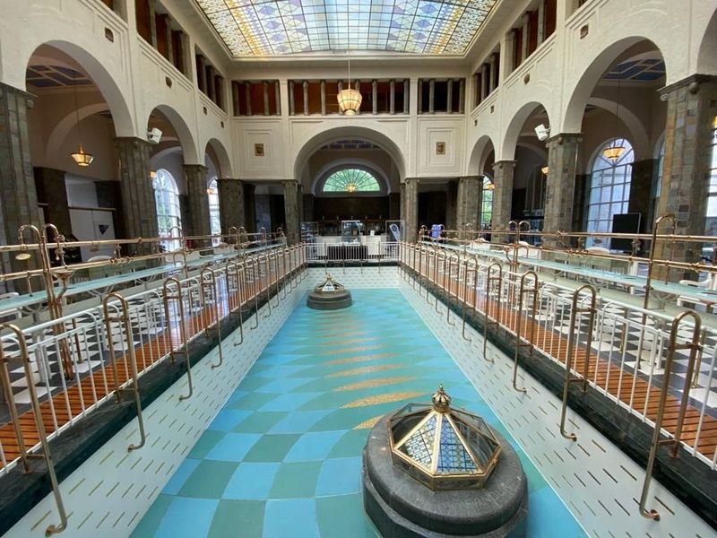
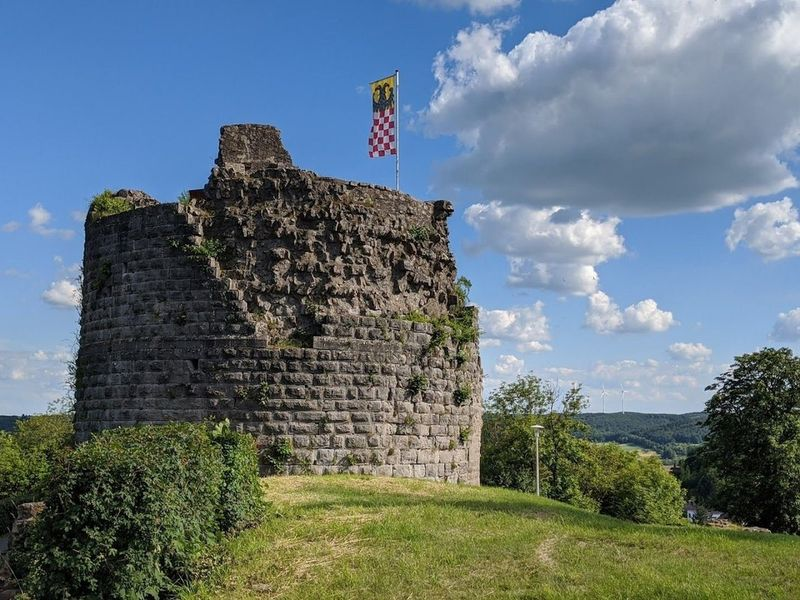
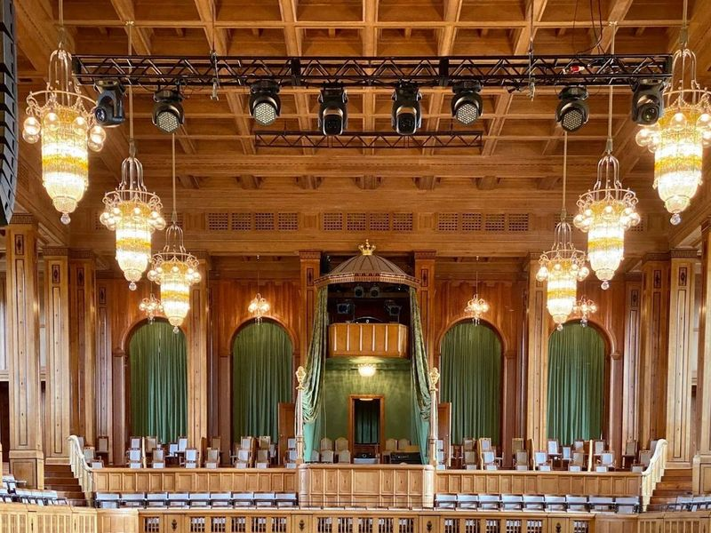
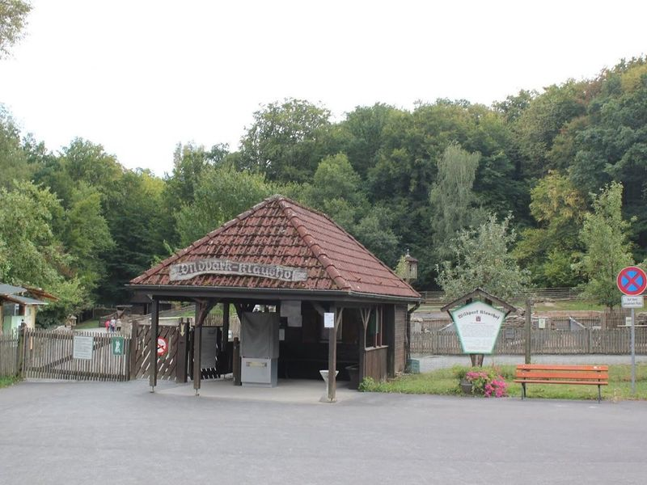
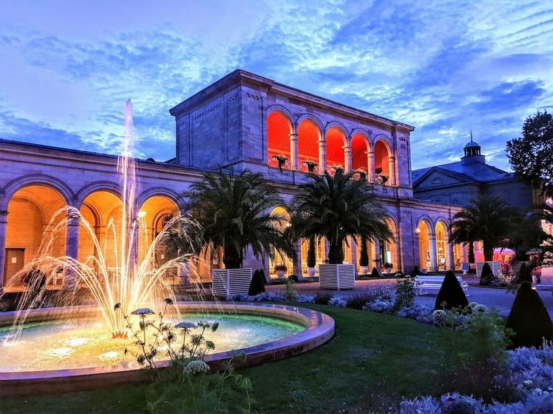
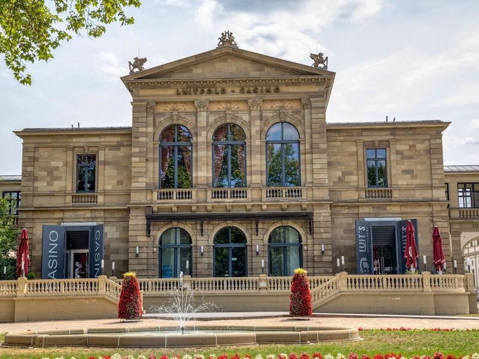
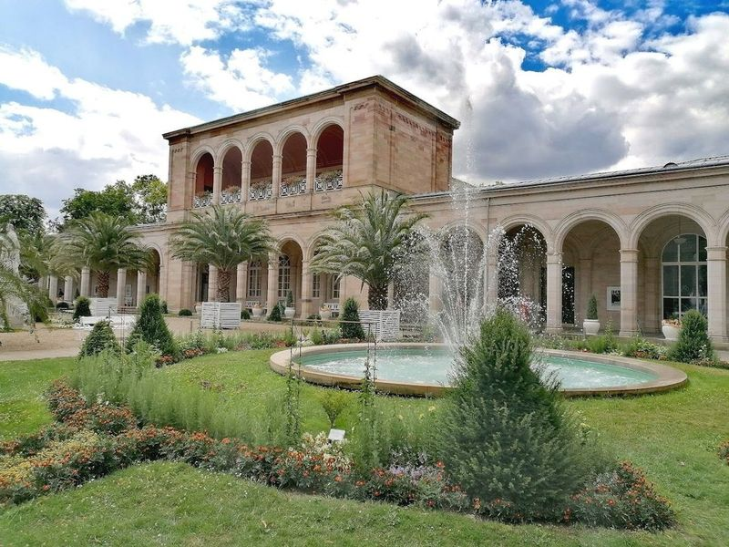

Explore Bad Kissingen
A Brief History
Bad Kissingen rose to prominence after Bavarian kings and Bismarck patronised its franconian mineral springs in the nineteenth century, commissioning arcades and the Regent's Building for court society. The Saale valley town hosted congresses and cures that linked Habsburg, Russian, and German elites before the First World War. Spa gardens, pump rooms, and casino architecture survive alongside modern clinics, recording how therapeutic travel shaped this royal resort east of Frankfurt.
Attractions Map
Top Sights & Activities

Brunnen- und Wandelhalle
Brunnen- und Wandelhalle is a historic 19th-century European spa that offers a luxurious experience for all travellers. The Art Nouveau roof and the KissSalis Therme provide an inviting atmosphere for relaxation. Additionally, the Regentenbau Theatre offers a diverse program of music, dance, and theatre for cultural enjoyment. travellers can explore the old mineral water and enjoy well-maintained gardens at this interesting historical site.

Burgruine Botenlauben
Botenlauben Castle is a medieval ruin located on the outskirts of town, offering a 5.1km hiking trail through the area. Accessible from a parking lot below the main path, it provides views of Bad Kissingen and features informative signs about its history. The castle, dating back to around 1000, sits atop a hill near a small town and offers picturesque spots for picnics and photo sessions.

Regentenbau
Regentenbau is a must-visit landmark in Bad Kissingen, commissioned by Prince Regent Luitpold in 1911. This Wilhelminian-style building features the White Hall, Green Hall, and Max Littmann Hall, offering an impressive ambience. The Max Littmann concert hall is renowned for its great acoustics and ranks among the top concert venues globally.

Wildpark Klaushof
Wildpark Klaushof is a delightful destination for families seeking a day of adventure and connection with nature. This expansive park features lush forestland that serves as a home to various wildlife, including lynxes, wild pigs, deer, and owls. Children will be thrilled by the petting zoo where they can interact with friendly animals like rabbits and feed them. The park also boasts engaging playgrounds that provide endless fun for little ones.

Kurgarten
Kurgarten is a gem nestled in the spa town of Bad Kissingen, located in Bavaria's Lower Franconia. This picturesque area is renowned for its elegant arcades and gardens, making it an public space for leisurely strolls. travellers can enjoy refreshing mineral water while soaking up the serene atmosphere filled with music and laughter from locals who treat like neighbors rather than tourists.

Casino Bad Kissingen
Casino Bad Kissingen is located in the principal spa district, situated to the south of the old town and spanning both sides of the river. The area boasts a collection of springs and a spa ensemble, featuring notable establishments like Luitpoldbad, Wandehalle, and pump rooms. Additionally, there are various leisure facilities such as kursaals, colonnades, Kurgarten, a theatre, and of course, the casino.

Luitpold Park
Luitpold Park is a destination to unwind and enjoy nature, especially during the serene German autumn. It offers ample space for leisurely strolls, invigorating jogs, and delightful picnics. The park also hosts special events like street food festivals, adding an extra layer of enjoyment to visit. With its tranquil ambiance and diverse offerings, it's a must-visit location that promises relaxation and rejuvenation.